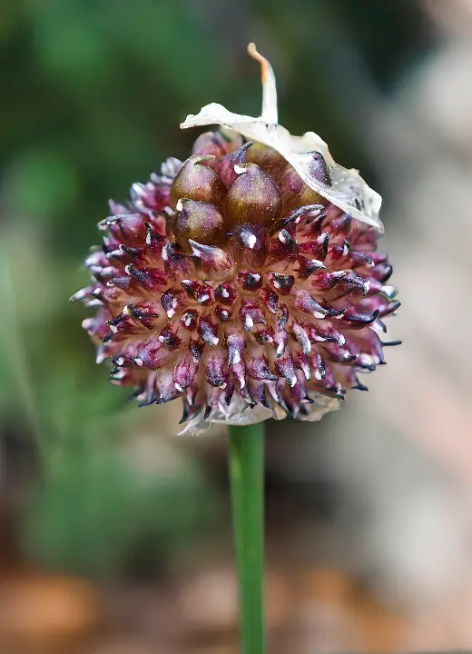

Crow garlic
Crow garlic is a wild green you can forage from February to July in Götaland (south). Thin, hollow, chive-like leaves in fields and verges smelling of garlic; heads of tiny purple bulbils in summer.

When is crow garlic in season in Sweden?
Crow garlic is usually in season February to July. Timing shifts with weather, latitude and altitude.
Where does crow garlic grow in Sweden?
Crow garlic grows in Blekinge, Gotland, Halland, Jönköping, Kalmar, Kronoberg, Skåne, Västra Götaland, Östergötland. Regions: Götaland (south).
How do you recognise crow garlic?
Thin, hollow, chive-like leaves in fields and verges smelling of garlic; heads of tiny purple bulbils in summer.
How do you harvest crow garlic?
Pinch off young tips and top leaves before the plant flowers, when they are tender and mild. Leave the roots and lower leaves so it regrows. Pick away from roads, sprayed verges and dog-walking paths.
How do you eat crow garlic?
Leaves like chives; bulbils pickled like capers.
How do you store crow garlic?
Pickle the bulbils.
What is crow garlic good for?
Vitamin C.